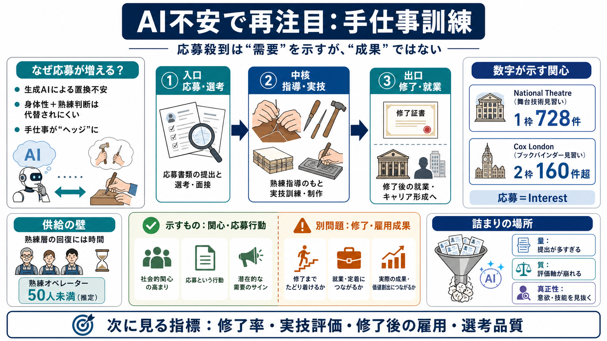

England’s apprenticeship system lagging behind international competitors - The Sutton Trust
England’s apprenticeship system also suffers from high dropout rates. Around 40% of apprentices fail to complete their c…

England’s apprenticeship system also suffers from high dropout rates. Around 40% of apprentices fail to complete their c…
In contrast, Manufacturing Technician and Manufacturing Engineering apprenticeships saw the highest growth in starts, ri…
Figures in the ‘national achievement rate tables’ section are as published in March 2026. These official statistics cove…
site. Please click the link below to continue. [...] View apprentice counts by location or by state-managed apprenticesh…
Despite apprenticeships being a UK ministerial priority for further education and skills, in 2022-2023, only one in four…